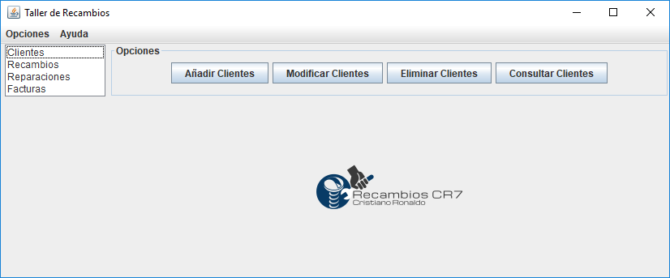
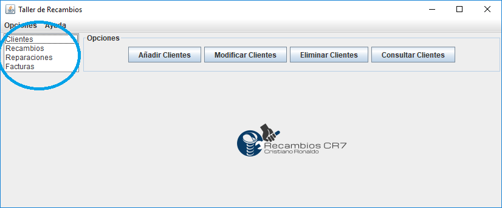

Aquí encontramos la ayuda para los usuarios Administradores.
Seleccione la opción que quiera consultar(Clientes, Recambios...).
Este es el menú principal para el Administrador.
Para seleccionar una de los elementos que queramos modificar, añadir, eliminar o consultar deberemos hacer clic dos veces sobre el nombre del elemento.
En el panel de la derecha, encontraremos las opciones en forma de botón. Clicaremos sobre el botón que necesitemos para realizar la opción que queramos hacer.

En las opciones podremos cerrar sesión si queremos cerrar nuestra sesión y volveremos al login.